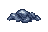
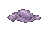

Slimey Residue — demon blue

Imagegen promptEctoplasm — banshee purple

Imagegen promptBoth use 48×32 transparent canvases, with 34×14 puddles. Native size and 10× nearest-neighbor zoom.

Imagegen prompt
Imagegen promptArt review only; not installed in-game.